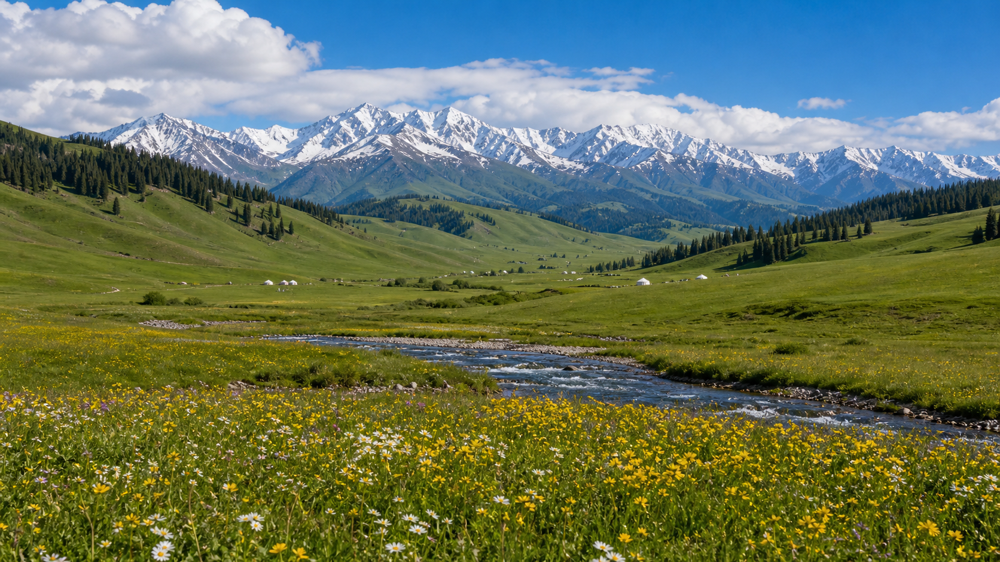

空中草原，哈萨克牧民的夏牧场天堂。
那拉提草原位于新疆伊犁哈萨克自治州新源县境内，地处天山腹地、伊犁河谷东端。"那拉提"在蒙古语中意为"有太阳的地方"，是世界四大草原之一。那拉提以"空中草原"著称——海拔2000多米的高山草甸上，夏季野花遍地、雪山森林环绕，哈萨克牧民的毡房点缀其间。每年6月至8月是那拉提最美的季节，绿草如茵、花海连绵，是体验草原游牧文化的绝佳之地。

那拉提景区主要分为空中草原和河谷草原两大片区。建议上午先乘区间车前往空中草原（游牧人家），这里是那拉提的精华——海拔最高的草甸，可远眺天山雪峰。下午返回河谷草原，沿巩乃斯河漫步，探访哈萨克牧民的毡房，品尝正宗奶茶和手抓肉。如果时间充裕，可骑马深入草原腹地，感受策马奔腾的自由。
1. 即使是夏天，早晚也需穿外套，草原上海拔高、风大、温差大。
2. 那拉提紫外线极强，务必做好防晒（帽子+墨镜+防晒霜）。
3. 景区内有骑马项目，建议提前谈好价格和路线。
4. 那拉提镇住宿条件有限，旺季（7—8月）需提前预订。
巴音布鲁克草原（九曲十八弯，车程约2.5小时）、独库公路（中国最美公路，那拉提为重要节点）、巩乃斯国家森林公园（车程约1小时）。